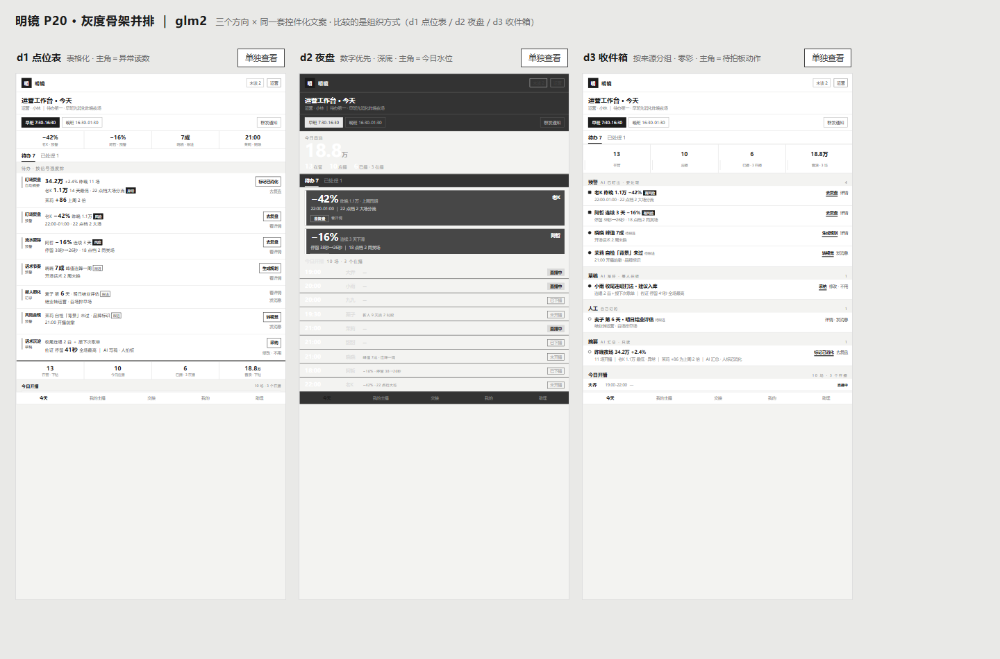

两阶段：先黑白灰骨架并排（比结构），再逐个上色（比身份）。三个方向共用同一套控件化文案（整屏正文 580 / 555 / 564 字，均 ≤700）；三方向之间共用色值 = 0（仅 #FFFFFF 纯白豁免）。点击画面可打开可操作小样。

| 门槛 / 配额 | 要求 | 结果 |
|---|---|---|
| 文字预算 | 整屏正文 ≤700 字；每卡正文 ≤2 行 × ≤24 字 | d1 580 / d2 555 / d3 564（原句照排约 1300 字，压缩 55%+）；各卡正文均 ≤2 行 |
| 灰度先行 | 先黑白灰骨架并排自检 | glm2-wire.html 三骨架并排，结构一眼不同 |
| 结构差异 | 九轴 ≥3 轴不同，含骨架或主角 | 5 轴不同（骨架 / 主角 / 色彩 / 字体 / 图形） |
| 色板不共用 | 共用色值 = 0（黑白灰除外） | 三套色板零交集（仅 #FFFFFF 纯白豁免）；三档状态色三套表达 |
| 配额 | 深底 ×1 ｜ 零彩 ×1 ｜ 信息图形化 ×1 | d2 深底 ｜ d3 零彩 ｜ d1 信息图形化 |
d1 点位表——本轮特别关注轴是"数据与状态的表达、信息图形化"，d1 把 9 条记录做成带表头的真表格、风险做成异常读数条，是把"图形化"做得最彻底、也最容易推广成全站数据语言的一版：表格骨架天然兼容 51 屏里的行列表、对账、名单、盘面（运营/经纪人/财务/老板全是表格语义）；胭脂/土金/苔绿三档状态是"账簿"语汇，中立耐看。d2 夜盘的冲击力最强但深底推广到表单、沟通页代价高；d3 零彩最克制但状态密度高的页面（如 P13）层级手段只剩字重，容易平。取舍细节见 glm2-方向卡.md 与 glm2-README.md。